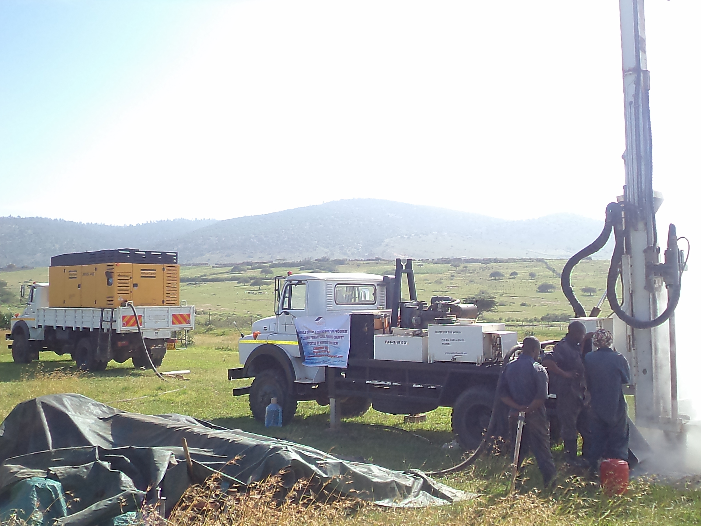
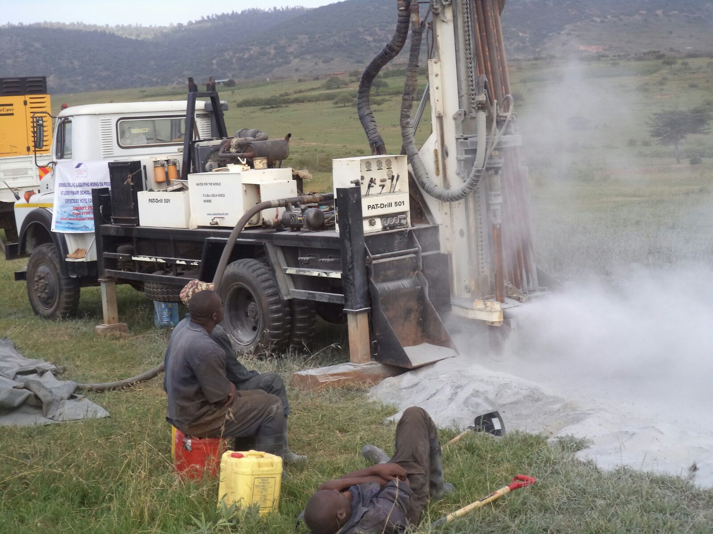
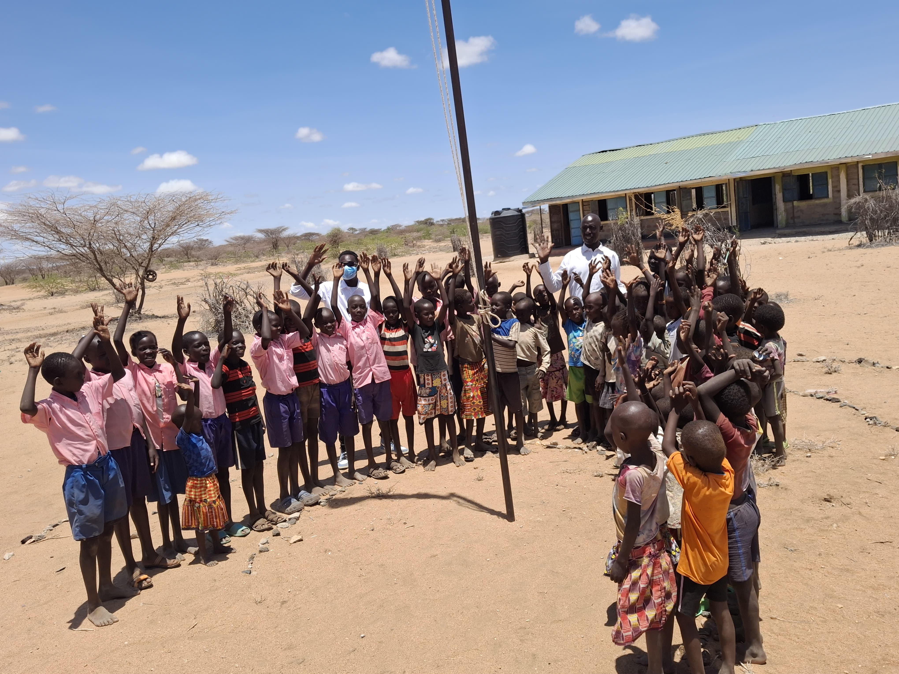
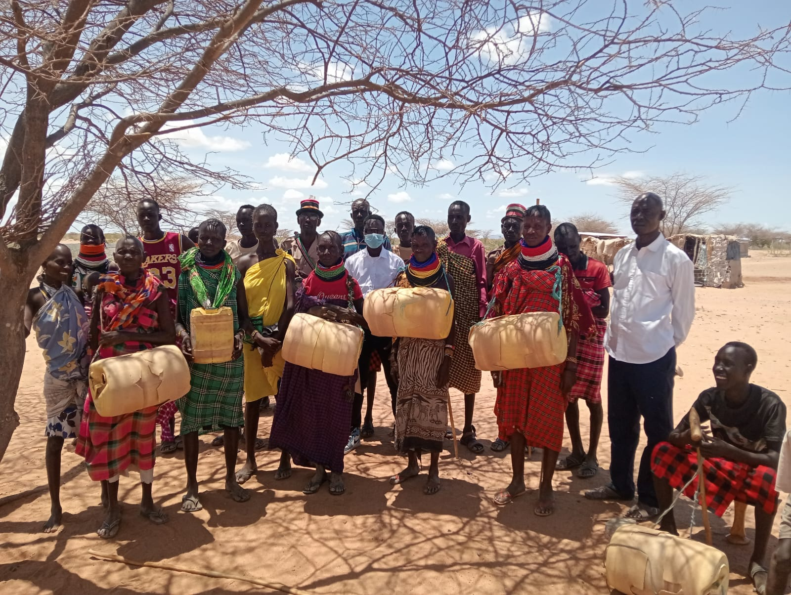

Water & WASH
Boreholes, solar pumping, storage, distribution, water quality, sanitation and hygiene.

Water • Nutrition • Education • Resilience
Hope Foundation-BICM is a U.S.-based nonprofit supporting humanitarian work in Kenya, with a focus on reliable water, school feeding, sanitation, education and sustainable community infrastructure.
Who We Are
Hope Foundation-BICM has supported mission and humanitarian work in Kenya, including clean-water initiatives. Our current direction expands that foundation into integrated water, WASH, nutrition, education and community-resilience programming.
We combine field reporting, responsible stewardship, technical assessment and community participation to develop projects that can be measured, maintained and improved over time.
Our First Successful Water Project • Samburu County
Before Hope Foundation-BICM established the Ledero Water Project, severe drought and lack of water had forced Ledero School to close. In 2016, Hope Foundation-BICM helped establish a reliable water source for the school and surrounding community, allowing the school to continue operating and creating a foundation for long-term educational continuity.
Today, Ledero School reports approximately 856 learners, supported by 20 teachers and 3 support staff. The water project has continued to serve both the school and the wider community since its establishment.
In October 2026, Hope Foundation-BICM is continuing its long-term commitment to Ledero through scheduled maintenance and replacement of the water pumping system. This is ongoing project stewardship—not a fundraising initiative.


Hope Foundation-BICM preserves original project photographs and videos—including date- and GPS-stamped field images—as evidence of project location, infrastructure and continuing maintenance.
Selected public images retain field documentation where appropriate. Exact location data is used as project-verification evidence while captions emphasize Ledero, Samburu County, Kenya.
Our Work
Boreholes, solar pumping, storage, distribution, water quality, sanitation and hygiene.
Locally informed feeding programs designed around attendance, nutrition, safe preparation and accountable procurement.
Classrooms, learning environments and infrastructure that help schools serve children safely and consistently.
Practical systems for maintenance, local participation, monitoring and continuity beyond construction.
Project #1 • Turkana County, Kenya
Water scarcity is affecting everyday life, health and education in the Kalotum community. The school's existing hand-pump borehole is no longer functioning. Hope Foundation-BICM is working toward a sustainable water solution for the school and surrounding community.


Current school records report 238 enrolled children. Village elders estimate approximately 680 children ages 5–16 in the wider community. The 680 figure is a community estimate—not current school enrollment—and will be verified during baseline work.
The planned scope includes professional groundwater assessment, borehole development, test pumping, water-quality analysis, solar pumping, storage and distribution to support reliable access to water.
The wider resilience initiative also addresses school infrastructure, sanitation and nutrition. These components are subject to final technical review, contractor reconciliation, procurement and available funding.
Hope Foundation-BICM is committed to documenting technical assessments, procurement, construction progress, water testing and project results so supporters can follow implementation from need to completed infrastructure.
Approximately US$47,000 based on the October 5, 2026 contractor quotation for the complete solar-powered borehole water system. The USD equivalent may vary with exchange rates.
Every contribution matters
Your gift supports Hope Foundation-BICM's humanitarian work in Kenya. Even if you cannot donate today, sharing this project can help it reach someone who can.
Donate to Kalotum on Every.orgResponsible Humanitarian Intelligence
GHWIP is Hope Foundation-BICM’s planned evidence and monitoring layer for understanding needs, tracking infrastructure, documenting field operations and measuring outcomes.
The platform is intended for humanitarian and development purposes—not military intelligence, political targeting or intrusive surveillance. High-impact decisions remain subject to human review.
Transparency & Accountability
Hydrogeological assessments, bills of quantities, water testing and construction records.
Project budgets, procurement records, receipts and donor-specific reporting.
Baseline, implementation and outcome monitoring designed to inform future projects.
Get Involved